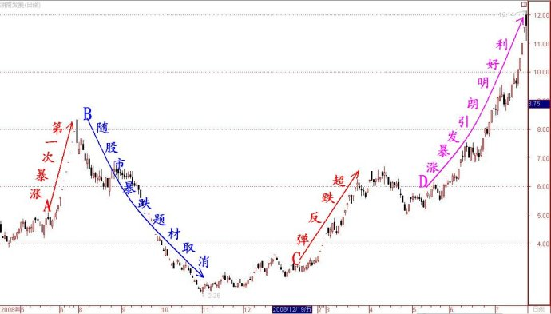
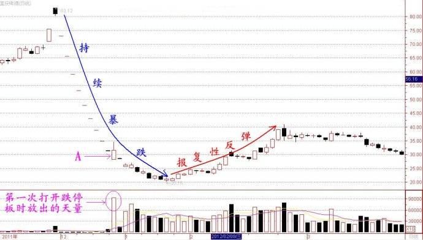

第204篇•教你炒股系列58:主升浪的形态（9）
谷为陵
案例3：“超跌+不确定公开性利好”超跌反弹案例——湖南发展
湖南发展是在今年6月15日借壳*ST金果上市的“新股”。*ST金果自2008年初就开始为“保壳”而战，期间演出了一幕幕惊心动魄的资本运作的大戏，引发股价几起几落，让人目不暇接，眼花缭乱。但最终该股还是修成了正果，总算是有了一个圆满的结局吧。我现在就来回顾一下该股自2008年5月至2009年7月的那一段暴涨暴跌的走势。以下是该股的该阶段的K线图：

我在上图中标记了4根趋势线，其中，红色A线是2008年7月，因河南一民营企业拟以注入铁矿方式借壳*ST金果，而使该股走出了一轮暴涨行情；蓝色B线是因股市大跌，且铁矿石的价格出现暴跌，而使计划拟注入*ST金果的铁矿价值大打折扣，导致*ST金果随着股市大跌而暴跌，并最终大幅地跌破了董事会公告的增发价格，本次资产重组宣告失败，这又造成股价进一步的下跌。最终，该股股价从最高的8.33元跌到了最低的2.26元，跌幅达73%。红色C线是该股股价在暴跌后出现的一轮报复性反弹，并形成了一轮连续“大阳线涨停板”型主升浪。粉色D线是因*ST金果重组一事逐渐明朗，股价出现了第二轮大涨行情。
*ST金果的走势与上文谈到的ST昌九的走势很相似，但又有很大的不同。其主要的不同点是：ST昌九在题材破灭，股价暴跌后，ST昌九不并没有发布任何公开的信息，以表明赣州稀土借壳事宜将继续进行，也就是说，在其股价暴跌后，该股的题材可能真的就不存在了；但*ST金果不同，该股在股价暴跌，铁矿借壳上市泡汤后，该公司在股价跌到底部时仍坚称将继续进行资产重组，这就非常清楚地告诉了投资者，即使注入铁矿没戏了，但公司的“保壳之战”肯定还会继续，重组题材将一直存在。
在*ST金果这样明确的表态情况下，该股股价在暴跌到2元多的时候，难道还有什么大的风险吗？于是，我们随后就看到该股很快展开了两轮主升浪，第一轮主升浪属于“超跌+不确定公开性利好”型，第二轮则属于“公开性利好逐渐明朗”型。经过两轮大涨，该股仅用半年时间，其股价就从2元多涨到了12元多，股价几乎翻了5倍，成了一只大黑马,简直让人瞠目结舌。
所以说，在A股市场，只要深入研究价格走势与市场行为的关系，那么，一定会发现很多重大投机性机会，这些投机性机会带来的暴利一点也不逊色于那些绩优成长股带来的投资收益。但这些投机性机会，却因大多数投资者没有进行过系统性地总结而忽视掉了。如果说，善于研究重大投资性机会的人可称为投资家，那么，善于研究重大投机性机会的人就应称为投机家，现在看来，不管是投资家，还是投机家，都可成为股市赢家。
案例4：“超跌+不确定公开性利好”超跌反弹案例——重庆啤酒
重庆啤酒是这几年最大的妖股之一，该股股价在去年因乙肝疫苗二期失败而崩盘后，给整个市场内外均造成了巨大的影响，其震撼力之大，恐怕只有当年的银广夏可与之相比。为了重庆啤酒的事情，中央电视台的财经节目竟然连续评论了一周的时间。
也许正是因为在该股股价崩盘期间，有央视以及其它众多媒体一齐对之口诛笔伐，大有不置之于死地绝不罢休之意，于是，该股在崩盘时就多走出了好几个跌停“一字板”，致使该股自2011年12月8日至2012年1月9日的短短19个交易日内，竟然连续出现了11个跌停板，股价也从83元暴跌到20元，跌幅高达76！该跌幅相当于上证指数从6200点跌到了1600点，但为达到这段跌幅，上证指数用了整整一年时间，而重庆啤酒仅用了一个月，这绝对算是极为惨烈的暴跌了。
就在许多投资者认为该股股价将从此一蹶不振的时候，该股却从20元的股价底部开始了一轮快速反弹，股价在一个月内就从20元涨到了40元，上涨了一倍，再次让市场震惊。以下是该股的暴跌暴涨K线图： 
关于重庆啤酒的走势，我在前面的博文中作过多次分析，重复的内容我就不再赘述了，今天我着重谈谈为什么重庆啤酒会走出这一轮报复性反弹行情的问题。我认为，重庆啤酒的这一轮大反弹，其性质应属于“超跌+不确定公开性利好”类型。
首先，该股的大反弹是超跌后的反弹，这是和尚头上的虱子——明摆着的。一般来说，股价暴跌后往往会出现暴涨，这是股价运行的一个较为普遍的现象。有人将这个现象提炼成了一种理论，叫做“摇摆理论”。该理论认为，股价运行倾向于往复运动，就像老式摆钟的钟摆一样，总是来回摇摆。当然，“摇摆理论”所指的这种股价摇摆，并非意味着股价总是从相同的起点到相同的终点，它强调的是股价运行方向的摇摆，即，股价涨多了就会回调一些，而跌多了就会反弹一些。即使对于大牛股和大熊股，摇摆现象也是存在的，因为从长期观察，大牛股的股价走势是按照大涨小回的方式上涨的，而大熊股的股价走势正好相反，是依照大跌小涨方式下跌的。
因此，股价在短期暴跌后，天然地就有反弹甚至大反弹的欲望和动力，这是不以任何人的意志为转移的，这是一个客观的市场现象。当然，从学术上看，其机理应该是相当复杂的，涉及很深奥的心理学和博弈学内容，在此我们暂不深入讨论了。所以，重庆啤酒股价在崩盘后，不管其崩盘理由为何，其股价都有随时反弹的可能性，这就是该股超跌反弹在理论上的解释。
其次，该股的大反弹有不确定的公开性利好作为支持。有人会说，该股的乙肝疫苗二期不是失败了，难道还有什么利好题材吗？事情并没有这么简单。大家若还记得清楚的话，在今年初的时候，重庆啤酒并没有宣布乙肝疫苗失败，该公司只是公告说要等到4月16日出才能给出最后的结果，且当时该公司还在计划进行三期临床试验的申请工作，这就给市场留下了一个朦胧的想象空间。在股价经过短期暴跌76%的情况下，这个朦胧的、还有一丝“念想”的利好对于股价的反弹会起到煽风点火的作用。
我敢说，假若当时重庆啤酒没有这个暂时“垂而不死”题材作祟，那么，该股的股价在跌到20元时是止不住的，因为按照其啤酒价值定位其股价，该股应该跌到15元左右才会反弹。事实上，有很多投资者就是准备在该股跌到15元左右时进场抄底的，他们的如意算盘是：15元已经是重庆啤酒的真实价值，即使乙肝疫苗最终失败，那么，以15元买入该股也不会赔什么钱；但假若以15元买入该股后，该股的乙肝疫苗能够在4月16日给出较好的结果，那么，该股的股价也许还会上涨到50～60元，那就大赚了。所以，以15元买入重庆啤酒，就是进可攻，退可守的操作方式。但是，这个诡异多变的市场并没有提供这样的廉价机会。
那些胆子大一些的主力机构，在去年12月21日，当该股股价跌到28元多时就进场抄底了（见上图中的A所指的交易日），根据当天的成交回报，当天进场的大主力来自上海，总计买进6亿元资金。但这波主力进场稍早了一些，因为当天大成基金在狂抛，这波主力不敢与手握大把重啤股票的大成基金正面作战，只好暂时收手，最终，重庆啤酒股价跌到了最低的20元，这批主力资金被套近30%。从短线来看，这波主力的抄底不能算是成功的。我曾在《第94篇•关于上海游资与重啤停牌问题的解答》中对于这波主力的抄底行为进行过分析，有兴趣朋友可以去看一下。
根据我的统计，凡是因利好题材破灭或者因庄家资金链断裂，而以连续跌停“一字板”暴跌的股票，其股价在第一次打开跌停板后就立即止跌反弹的概率不超过30%，它们往往会在第一次打开跌停板后继续下跌30%才可短期止跌。我在上文提到的ST昌九也是如此，该股在第一次打开跌停板后，又连续跌了6个5%的跌停板才止跌反弹。也就是说，对于这类崩盘的股价，可以在其第一次打开跌停板后，要耐心等待一下再抄底。
（未完待续）